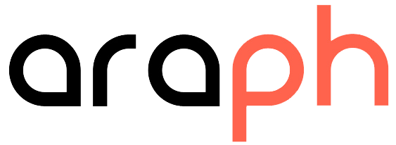

«Environ 6 % de la population belge souffre d'un handicap moteur, ce qui représente plus de 0 personnes»
-Organisation mondiale de la santé (OMS)
Ces personnes peuvent rencontrer des difficultés à naviguer sur le web en raison de leur handicap, ce qui peut les priver d'un accès à des informations vitales, à des services en ligne et à des opportunités économiques et sociales. En garantissant que le web soit accessible à tous, nous pouvons aider à briser les barrières pour les personnes atteintes de handicaps moteurs en Belgique et améliorer leur qualité de vie.
ARAPH
Lorsque j'ai commencé à réfléchir à mon TFA sur l'accessibilité du web pour les personnes atteintes de handicaps, j'ai rapidement réalisé que je ne pourrais pas y arriver seul. J'ai donc commencé à chercher des associations ou des organisations dans la région de Namur qui travaillent sur ce sujet.
C'est ainsi que j'ai découvert l'ASBL «ARAPH», l'Association Régionale d'Aide aux Personnes Handicapées. Cette organisation est engagée dans l'aide et l'accompagnement des personnes atteintes de handicaps en leur fournissant des services de qualité adaptés à leurs besoins spécifiques.
Ceux-ci m'ont aussi permis d’entrer en contact avec des porteurs de handicaps afin de réaliser plusieurs interviews dont j’ai pu tirer beaucoup de conclusions intéressantes.

En résumé, les principales barrières auxquelles les personnes atteintes de handicaps sont confrontés lorsqu'ils naviguent sur internet sont liées aux problèmes de navigation, à la difficulté à utiliser les boutons, aux tremblements et au zoom. Ils ont proposé que l'accessibilité soit prise en compte dès le début de la conception des sites web.
Retrouvez l’ensemble des mes interviews et leur conclusion ici
Solutions
Après réflexion, il m'est venu 3 solutions, 3 pistes que je me devais d’explorer :
Proposer une navigation simplifiée
Une navigation simple et intuitive facilite l'accès aux informations pour les personnes ayant des handicaps moteurs.
Il est important de proposer une navigation claire, facile à comprendre et cohérente sur toutes les pages du site web. Par exemple fournir un service créant des variantes des sites accessibles aux personnes atteintes de handicaps
Proposer des alternatives à la souris
Pour les personnes ayant des difficultés à utiliser une souris, il est important de proposer des alternatives telles que la navigation au clavier, les raccourcis clavier et les gestes tactiles pour les écrans tactiles.
Au début de mon projet j'avais d'ailleurs explorer la piste de l'eye tracking, une technologie permettant auxs utilisateurs de naviguer grâce à leur regards.
Coder un site de manière accessible et éducative avec plusieurs outils permettant la mise en situation d’un utilisateur dans la peau d’un porteur de handicap.
Pour améliorer le quotidien de ceux-ci, la première étape serait de sensibiliser l'entièreté du corps de métier à leur situation.